Mercedes-AMG Petronas F1 Team, Deutschland

-
- Fahrer-WM-Titel: 8
- Fahrer-WM-Titel: 8
- Konstrukteurstitel: 6
- Teamchef: Toto Wolff
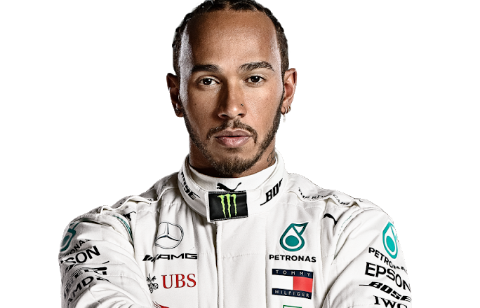
- 44 Lewis Hamilton, Großbritannien, 35 Jahre
- Weltmeister 2008,
2014, 2015, 2017,
2018, 2019
- Vizeweltmeister 2007, 2016
- 250 WM-Starts, 88 Poles, 84 Siege
- Erster Start: Australien 2007
- Erster Sieg: Kanada 2007
- Karriere: 2007-2012 McLaren, 2013-... Mercedes
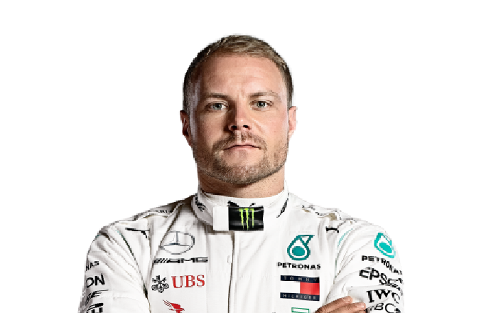
- 77 Valtteri Bottas, Finnland, 30
- Vizeweltmeister 2019
- 139 WM-Starts, 11 Poles, 7 Siege
- Erster Start: Australien 2013
- Erster Sieg: Russland 2017
- Karriere: 2013-2016 Williams, 2017-... Mercedes
Scuderia Ferrari Mission Winnow,
Italien

-
- Fahrer-WM-Titel: 15
- Konstrukteurstitel: 16
- Konstrukteurstitel: 6
- Teamchef: Mattia Binotto
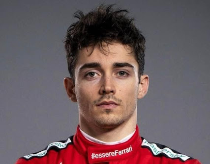
- 5 Sebastian Vettel, Deutschland, 32
- Weltmeister 2010, 2011, 2012, 2013
- Vizeweltmeister 2009, 2017, 2018
- 240 WM-Starts, 57 Poles, 53 Siege
- Erster Start: USA 2007
- Erster Sieg: Italien 2008
- Karriere: 2007 BMW Sauber, 2007-2008 Toro Rosso,
2009-2014 Red Bull, 2015-... Ferrari
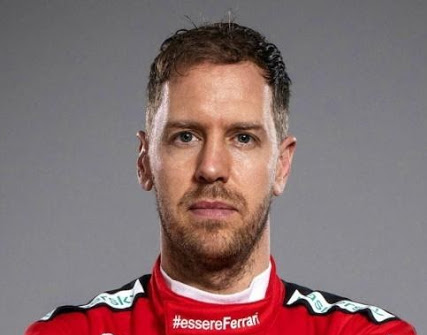
- 16 Charles Leclerc, Monaco, 22
- WM-Vierter 2019
- Formel 2-Meister 2017
- 42 Starts, 7 Poles, 2 Siege
- Erster Start: Australien 2018
- Erster Sieg: Belgien 2019
- Karriere: 2018 Sauber, 2019-... Ferrari
Aston Martin Red Bull Racing, Österreich

-
- Fahrer-WM-Titel: 4
- Konstrukteurstitel: 4
- Teamchef: Christian Horner
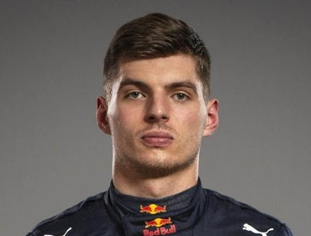
- 33 Max Verstappen, Niederlande, 22
- WM-Dritter 2019
- 102 WM-Starts, 2 Poles, 8 Siege
- Erster Start: Australien 2015
- Erster Sieg: Spanien 2016
- Karriere: 2015-2016 Toro Rosso, 2016-... Red Bull
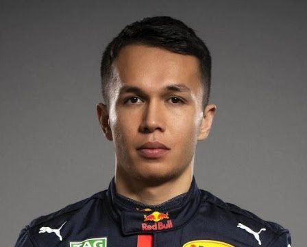
- 23 Alexander Albon, Thailand, 24
- Formel 2-Dritter 2018
- WM-Achter 2019 (Debütsaison)
- 21 WM-Starts, 0 Poles, 0 Podien
- Erster Start: Australien 2019
- Erste Punkte: Bahrain 2019
- Karriere: 2019 Toro Rosso, 2019-... Red Bull
Renault DP World F1 Team, Frankreich

- Fahrer-WM-Titel: 2, mit Benetton 4
- Konstrukteurstitel: 2, mit Benetton 3
- Teamchef: Cyril Abiteboul
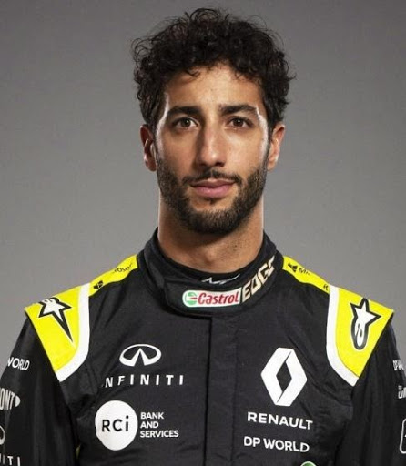
- 3 Daniel Ricciardo, Australien,
30
- WM-Dritter 2014, 2016
171 WM-Starts, 3 Poles, 7 Siege
- Erster Start: Großbritannien 2011
- Erster Sieg: Kanada 2014
- Karriere: 2011 HRT, 2012-2013 Toro Rosso, 2014-2018
Red Bull, 2019-2020 Renault, 2021-... McLaren
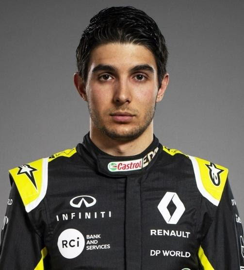
- 31 Esteban Ocon, Frankreich, 23
- WM-Achter 2017
- 50 WM-Starts, 0 Poles, 0 Podien
- Erster Start: Belgien 2016
- Erste Punkte: Australien 2017
- Karriere: 2016 Manor, 2017-2018 Force India/Racing Point,
2020-... Renault
Scuderia Alpha T auri Honda,
ehemals Scud. Toro Rosso, Italien

- Keine Fahrer- und Konstrukteurstitel
- Teamchef: Franz Tost
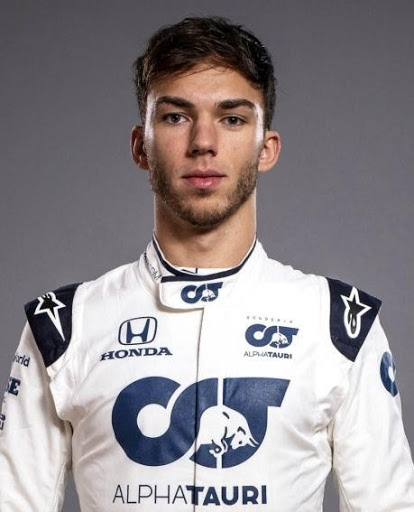
- 10 Pierre Gasly, Frankreich, 24
- Formel 2-Meister 2016
- WM-Siebter 2019
- 47 WM-Starts, 0 Poles, ein Podium
- Erster Start: Malaysia 2017
- Erstes Podium: Brasilien
- Karriere: 2017-2018 Toro Rosso, 2019 Red Bull, 2019-...
Toro Rosso/Alpha Tauri
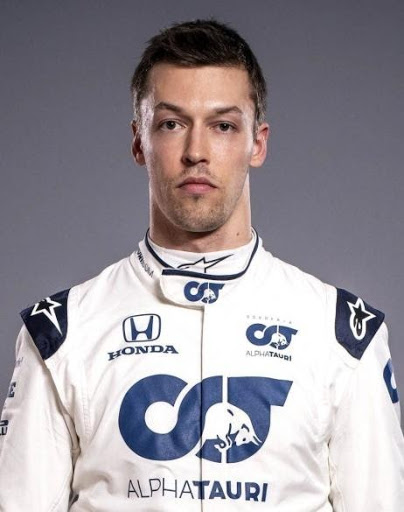
- 26 Daniil Kvyat, Russland, 26
- Formel 3-Meister 2013
- WM-Siebter 2015
- 93 WM-Starts, 0 Poles, 3 Podien
- Erster Start: Australien 2014
- Erstes Podium: Ungarn 2015
- Karriere: 2014 Toro Rosso, 2015-2016 Red Bull,
2016-2017 & 2019-... Toro Rosso
McLaren F1 Team, England

- Fahrer-WM-Titel: 12
- Konstrukteurstitel: 8
- Teamchef: Andreas Seidl

- 55 Carlos Sainz,
Spanien, 25
- WM-Sechster 2019
- 102 WM-Starts,
0 Poles, ein Podium
- Erster Start: Australien 2015
- Erstes Podium: Brasilien 2019
- Karriere: 2015-2017 Toro Rosso, 2017-2018 Renault,
2019-2020 McLaren 2021-? Ferrari

- 4 Lando Norris, Großbritannien, 20
- WM-Elfter 2019 (Debütsaison)
- Formel 3-Meister 2017
- Formel 2-Vizemeister 2018
- 21 WM-Starts, 0 Poles, 0 Podien
- Erster Start: Australien 2019
- Erste Punkte: Bahrain 2019
- Karriere: 2019-... McLaren
BWT Racing Point F1 Team, Großbritannien

- Keine Fahrer- und Konstrukteurstitel
- Teamchef: Otmar Szaf-nauer

- 11 Sergio Pérez, Mexiko,
30
- Formel 2-Vizemeister 2010 WM-Siebter 2016, 2017
176 WM-Starts, 0 Poles, 8 Podien
- Erster Start: Australien 2011
- Erstes Podium: Malaysia 2012
- Karriere: 2011-2012 Sauber, 2013 McLaren,
2014-... Force India/Racing Point

- 18 Lance Stroll, Kanada, 21
- Formel 3-Meister 2016
- WM-Zwölfter 2017
- 62 WM-Starts, 0 Poles, ein Podium
- Erster Start: Australien 2017
- Erstes Podium: Aserbaidschan 2017
- Karriere: 2017-2018 Williams, 2019-... Racing Point
Alfa Romeo Racing Orlen, Schweiz

- Keine Fahrer- und Konstrukteurstitel
- Teamchef: Frédéric Vasseur
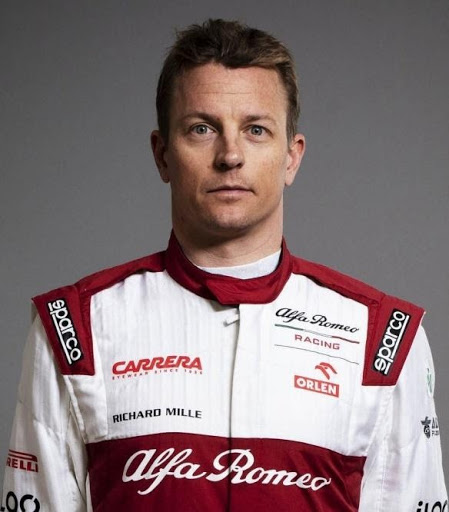
- 7 Kimi Räikkönen, Finnland, 40
- Weltmeister 2007, Vizeweltmeister 2003, 2005
315 WM-Starts, 18 Poles, 21 Siege
- Erster Start: Australien 2001
- Erster Sieg: Malaysia 2003
- Karriere: 2001 Sauber, 2002-2006 McLaren, 2007-2009 Ferrari,
2012-2013 Lotus, 2014-2018, 2019-... Alfa Romeo
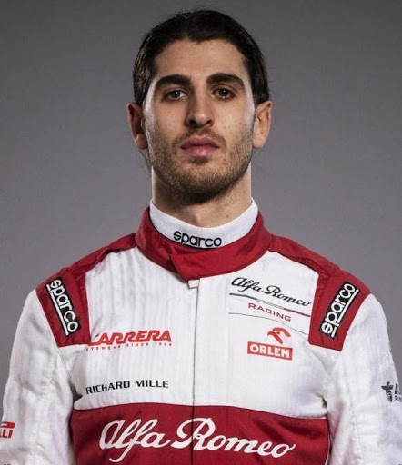
- 99 Antonio Giovinazzi, Italien, 26
- Formel 2-Vizemeister 2016
- 23 WM-Starts, 0 Poles, 0 Siege
s
- Erster Start: Australien 2017
- Erste Punkte: Österreich 2019
- Karriere: 2017, 2019-... Alfa Romeo
Haas F1 Team, USA
- Keine Fahrer- und Konstrukteurstitel
- Teamchef: Günther Steiner
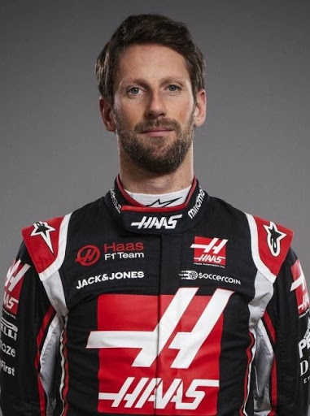
- 8 Romain Grosjean, Frankreich, 34
- WM-Siebter 2013
- Formel 2-Meister 2011 164 WM-Starts, 0 Poles, 10 Podien
- Erster Start: Europa 2009
- Erstes Podium: Bahrain 2012
- Karriere: 2009 Renault, 2012-2015 Lotus, 2016-... Haas
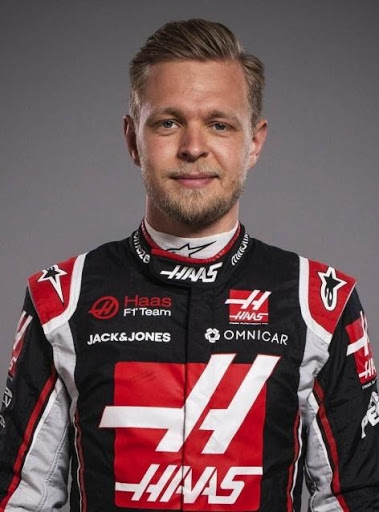
- 20 Kevin Magnussen, Dänemark, 27
- WM-Neunter 2018
- 102 WM-Starts, 0 Poles, ein Podium
- Erster Start: Australien 2014
- Erstes Podium: Australien 2014
- Karriere: 2014-2015 McLaren, 2016 Renault, 2017-2020 Haas
ROKiT Williams Racing, Großbritannien

- Fahrer-WM-Titel: 7
- Konstrukteurstitel: 9
- Teamchef: Sir Frank Williams
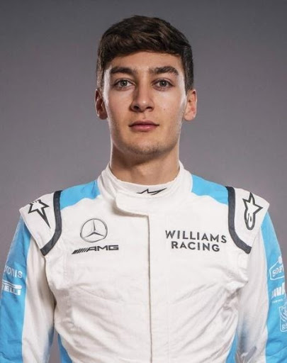
- 63 George Russell, Großbritannien, 22
- Formel 2-Meister 2018
- 21 WM-Starts, 0 Poles, 0 Punkte
- Erster Start: Australien 2019
- Keine Punkte
- Karriere: 2019-... Williams
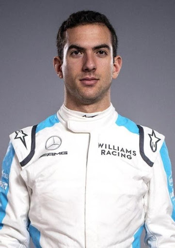
- 6 Nicolas Latifi, Kanada, 24
- Formel 2-Vizemeister 2019
- F1-DEBÜTSAISON
- Karriere (Formel 2): 2014 Hilmer Motorsport,
2015 MP Motorsport, 2016-2019 DAMS